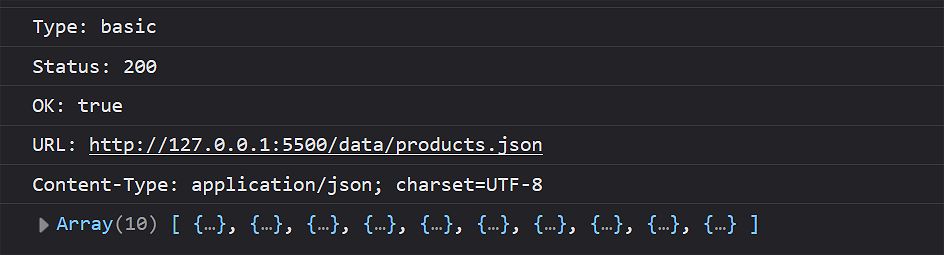
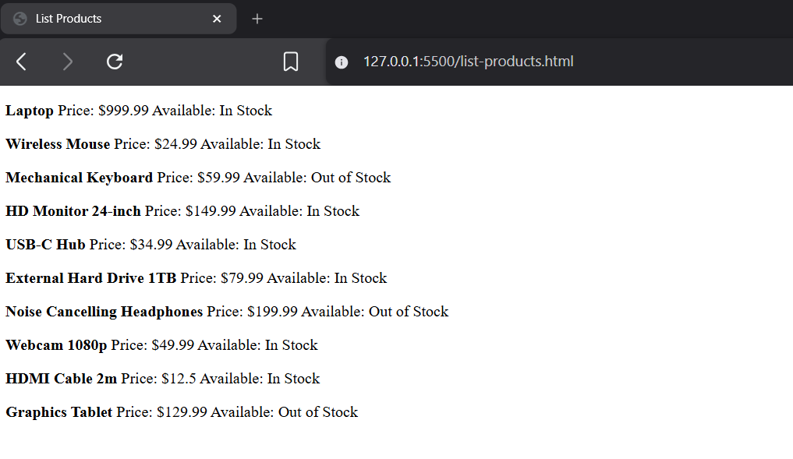

Learning Goals
At the end of this Tutorial, you will be able to:
- Create text files in JSON-format.
- Use the asynchronous Fetch API to retrieve files from a remote server.
- Understand the roles of the Promise and Response objects.
- Check for network errors with the try...catch (error) syntax.
For this Tutorial, in your javascript/exercises folder, create four new text files:
list-products.html and list-products.js
list-users.html and list-users.js
For the two web page files, use the Shift + ! shortcut to generate skeleton HTML code.
Also in your two web pages, add links to list-products.js and list-users.js using <script> tags with the defer attribute.
In your exercises folder, create a new subfolder named data.
Inside exercises/data subfolder, create two new JSON files:
products.json and users.json
Introduction
Up until now, all data (variables, arrays, and objects) has been hard-coded inside your JavaScript .js files. In the real world, data lives outside the code - in files or databases on the same or different servers.
To retrieve data from such sources, you need to learn about:
- JSON-format: This is the typical format for working with external data.
- Fetch API: Makes it possible to retrieve external data without the web page re-loading.
- Live server: For security reasons, the Fetch API runs only on a webserver.
What is JSON?
In the Arrays of objects tutorial, you learnt that spreadsheet-style structured data tables in rows and columns can be represented in JavaScript by an array of objects.

- Each record row is an object (with curly braces {}).
- Each object has the same keys (matching the spreadsheet columns).
- The items (objects) are separated by commas ,.
- The entire dataset is an array (with square brackets []).
Working with JSON-format data
JSON stands for JavaScript Object Notation. It is a common format for storing and moving data between files and web pages.
JSON data looks similar to JavaScript objects but has some key differences:
- Keys (property names) must be in double quotes. For example, "price" and "age".
- String values must be in double quotes. For example, "laptop" and "Smith".
- No trailing commas , after the last value in objects.
Creating two sample JSON files
Below are two examples of files with JSON-format data.
Copy the data below to your products.json file in your /data subfolder.
[
{ "productID": 1001, "name": "Laptop", "price": 999.99, "inStock": true },
{ "productID": 1002, "name": "Wireless Mouse", "price": 24.99, "inStock": true },
{ "productID": 1003, "name": "Mechanical Keyboard", "price": 59.99, "inStock": false },
{ "productID": 1004, "name": "HD Monitor 24-inch", "price": 149.99, "inStock": true },
{ "productID": 1005, "name": "USB-C Hub", "price": 34.99, "inStock": true },
{ "productID": 1006, "name": "External Hard Drive 1TB", "price": 79.99, "inStock": true },
{ "productID": 1007, "name": "Noise Cancelling Headphones", "price": 199.99, "inStock": false },
{ "productID": 1008, "name": "Webcam 1080p", "price": 49.99, "inStock": true },
{ "productID": 1009, "name": "HDMI Cable 2m", "price": 12.50, "inStock": true },
{ "productID": 1010, "name": "Graphics Tablet", "price": 129.99, "inStock": false }
]And copy this data to your users.json file in your /data subfolder.
[
{ "firstName": "Luis", "lastName": "Martinez", "age": 32, "isActive": true },
{ "firstName": "Emma", "lastName": "Smith", "age": 28, "isActive": false },
{ "firstName": "Tom", "lastName": "Murphy", "age": 21, "isActive": true },
{ "firstName": "Sophia", "lastName": "Brown", "age": 45, "isActive": true },
{ "firstName": "James", "lastName": "Wilson", "age": 35, "isActive": false },
{ "firstName": "Olivia", "lastName": "Miller", "age": 29, "isActive": true },
{ "firstName": "Daniel", "lastName": "Taylor", "age": 52, "isActive": true },
{ "firstName": "Ava", "lastName": "Anderson", "age": 24, "isActive": false },
{ "firstName": "Lucas", "lastName": "Thomas", "age": 39, "isActive": true },
{ "firstName": "Mia", "lastName": "Jackson", "age": 31, "isActive": true }
]A very basic Fetch API example
Below is a very basic example of the Fetch API in action without error handling. Copy this to your list-products.js file:
async function fetchProductData() {
// Fetch the resource and get a Response (status, headers, body stream)
const response = await fetch("data/products.json");
// Parse the response object to JSON
const data = await response.json();
// Verify the code is working by logging the data to the console
console.log(data);
}
// Call the function to run the fetch request
fetchProductData();Copy this same code to your list-users.js file. And then:
- Update the function name to fetchUserData().
- Update the JSON file name to data/users.json.
CORS and the file:// protocol
Cross-origin resource sharing (CORS) is a browser mechanism which controls access to resources located outside of a given domain. When you open pages with the file:// protocol, the browser treats this as a special (and restricted) origin. Many fetch requests will be blocked—often with CORS-like messages—so you should use a local server.

For your list-products.html and list-users.html pages and their scripts to work correctly, you must run them through a local web server, such as the VS Code Live Server extension.
Ensure that you have the Live Server extension installed and running, and that your two HTML files are in your currently-selected folder.


Finally, open the Console for your two HTML files to see the fetched data.

About the Fetch API
You've got your two basic examples working. Now let's look at what's actually happening under the hood.
The Fetch API is a built-in JavaScript function that enables you to send HTTP requests to web servers and handle the responses.
You need to supply only a single argument to the fetch() method, known as an endpoint. See below.
const response = await fetch("ENDPOINT_GOES_HERE");Working with the Promise and Response objects
The Fetch API uses two built-in JavaScript objects. The async keyword makes your function return a Promise to its caller. In this case, the Promise will resolves to a Response.
Think of a Promise as a placeholder for a value that doesn't exist yet. It says: "I am working on retrieving your data. It will be ready shortly."
async function getSomeData() {
/* A Promise is immediately returned to the calling code.
To the main thread, this function is now 'finished.'
In fact, it is running asynchronously outside the main thread */
}This Promise object can have one of three possible statuses:
|
pending |
The request's initial state. |
|
fulfilled |
The request has completed successfully and a value is returned. |
|
rejected |
The request has failed and a reason (error) is returned. |
A Promise that is either fulfilled or rejected is said to be settled.
The await keyword tells the async function to pause until a response is received. It says: "Stop executing on this line. Don't move to the next line until a response comes back."
async function getSomeData() {
const response = await fetch("path/to/file.json");
// Don't move beyond the above line until a response is received.
}Note that await only pauses execution inside the function - not the whole program. The result is that the function behaves asynchronously and the main thread is never blocked.
To the user, the web page remains responsive and does not 'freeze' while waiting for the data to be retrieved.
Here is a summary of the full process:
- The main program calls a Fetch API function such as getSomeData().
- The async keyword tells the function to immediately return a Promise object that says to the calling code: "You carry on. Don't wait for me to finish." Because the Fetch API function is now running asynchronously, the main thread of your code is not blocked.
- Inside Fetch API function, the await keyword says: "Stop at this line until a response is received from the endpoint."
- Assuming the request succeeds, the status of the Promise object shifts from pending to fulfilled. This is when the network response is 'loaded into' the Promise object, resolving it into a Response object.
- The await keyword now allows the Fetch API function to continue executing and process (parse) the response.
What's inside the response object?
The Response object contains more than just the data you are interested in. You can think of it as a 'package' that wraps the full HTTP response, including:
|
Status code |
A numeric code telling you whether the request succeeded or not. 200 means OK, 404 means not found, 500 means a server error, and so on. |
|
Headers |
Metadata about the response, such as what format the content is in (Content-Type), how long it is, caching instructions, and more. |
|
Security-related info |
This includes a type property that tells you something about where the response came from and what security rules applied to it. For example, a value of cors means the server explicitly allowed a cross-origin request, while opaque means the browser restricts what you can read from the response |
|
Body |
This is the actual data you requested, but it arrives as a stream rather than in ready-to-use format. The method you choose to parse this data stream depends on what kind of data you're expecting. |
In your list-products.js script, add the following code after the line containing the await keyword.
console.log(`Type: ${response.type}`); // e.g. "basic", "cors", "opaque", "opaqueredirect"
console.log(`Status: ${response.status}`); // e.g. 200
console.log(`OK: ${response.ok}`); // true or false
console.log(`URL: ${response.url}`); // the final URL (may differ if redirected)
console.log(`Content-Type: ${response.headers.get('Content-Type')}`);In your browser Console you should see the details similar to the following:
About the response variable
Like other JavaScript variables, the response variable can hold a reference to an object, a pointer to where the actual object and its properties and methods live in memory.
In this case, it references the Response object returned by the Fetch API. And it lets you read properties like response.ok and call methods like response.json() to parse the content.
/* After Promise object is resolved to a Response object,
convert the body of the Response object from JSON format
to a usable JavaScript array. */
const data = await response.json();Parsing the response with .json()
To work with the data you requested, you need to parse the body of the Response object. The method you choose depends on what kind of data you're expecting to receive.
|
.json() |
Use this to parse the response body from JSON format into usable JavaScript code, either an array or an object. |
|
.text() |
Use this to return the response body as a plain string, whatever the content. |
Note that the .json() method itself returns a Promise, so the function needs to await for it to finish before continuing. The reason is that the response body arrives as a stream, meaning the data can trickle in over the network in chunks rather than all at once.
Because the body is a stream, it hasn't all arrived yet. .json() reads this stream, waits for all the chunks to arrive, assembles them, and then parses the result. Since this reading and assembling process takes time, .json() itself must return a Promise, which is why we must await it.
When the parsing from JSON-format to a JavaScript array is complete, the data variable will reference a JavaScript array that you can access properties of with dot notation, loop over, and so on.
So your Fetch API function is actually waiting on two separate asynchronous operations:
- The first await gets you the envelope or wrapper.
- The second await opens it and reads the contents.
Outputting data to the web page
Now that you have successfully fetched and parsed the JSON data, let's display it on the web page. We will use the .forEach() method to loop through the array and dynamically generate HTML for each item.
Let's begin by adding an empty <div> element with an ID of products-container to the list-products.html web page file. This is where JavaScript will insert the generated content.
<div id="products-container"></div>Now, in your list-products.js script, add the following function call after the second await line in your Fetch API function:
displayProducts(data);This function call passes the data array as an argument to the new display function, displayProducts().
Next, add this display function at the bottom of your list-products.js file:
// Function to handle the DOM output
function displayProducts(productsArray) {
const container = document.getElementById("products-container");
let htmlOutput = "";
// Loop through each product in the array
productsArray.forEach(product => {
/* Build the HTML string using the compound assignment operator
and template literals.
Line breaks added for readability */
htmlOutput += `
<p>
<b>${product.name}</b>
Price: $${product.price}
Available?: ${product.inStock ? "Yes" : "No"}
</p>
`;
});
/* Output the final HTML to the "products-container"
DIV element on the web page */
container.innerHTML = htmlOutput;
}Your web browser should now display the list of products dynamically generated from the JSON data.
Repeat the above steps for your list-users.html and list-users.js files.
Error-checking Fetch API requests
Because a Fetch API request may be unsuccessful, it is important to add error-checking to your code.
Two types of errors are possible:
- HTTP errors: When you successfully connect with the server - but the response received is an error status code, such as 404 (Not Found) or 500 (Internal Server Error).
- Network errors: When the request cannot be completed, such as when the server cannot be reached or the data is corrupted and cannot be parsed.
Let's examine how to handle numeric error status codes in your code.
Checking for HTTP status errors
Every successful server response will include a status code. Any code in the range 200-299 indicates a successful response.
You can use the .ok property of the Response object to test for such a response.
// Make a fetch request to the server. Update the endpoint as needed.
const response = await fetch("path/to/file.json");
// *** Test status code is in success range ***
if (!response.ok) {
// Any non-successful status code
console.log(`Network response was not ok - Status: ${response.status}`);
// Stop executing the function and return control to the calling code
return;
}
/* No else block is necessary
Handles 200, 201, 204, and any other 2xx success code
Continue to parsing and outputting the server response
*/
const data = await response.json(); // parse the body
console.log(data); // inspect it
displayProducts(data); // use itBecause the 'bad' branch comes first, there is no need for an else block. The early return; statement will cause the Fetch API function to exit if an error occurs.
Update your list-products.js and list-users.js scripts with the error-checking steps shown above.
Checking for errors with try...catch (error)
The if(!response.ok) condition handles situations where the server responded properly - even if the response was an error code. For example, 404 (Not Found) or 500 (Internal Server Error) responses are considered a 'success' from the network perspective.
Wrapping all the code inside your function with a try-catch (error) clause provides wider protection against other types of errors.
The try-catch statement allows you to test a block of code for errors and handle any exceptions that occur. The basic syntax is as follows.
try {
// Code that might cause an error
} catch (error) {
// Code to handle the error
}Here is how it works:
- The try block contains the code that might throw an error.
- If an error occurs, execution of that block stops immediately.
- Control transfers to the catch block.
- The catch parameter (commonly named error or err) contains information about the error.
- After the catch (error) block executes, the program continues running after the try...catch statement.
For error-checking Fetch API requests, you wrap the entire fetch code inside a try block, and then add a catch block to handle any errors that occur.
async function getSomeData() {
try {
// code to fetch and process server data goes here
}
catch (error) {
// Handle any errors that occur in the try block
console.error(`Error fetching data: ${error}`);
} // end of try-catch
} // end of Fetch API functionIn summary:
|
if (!response.ok) {} |
Detects HTTP errors. A "404 Not Found" or a "500 Server Error" is treated as a successful network connection. |
|
try...catch (error) |
Handles network and code failures, such as Internet connection or DNS failures, or if the response.json() method crashes because the file is corrupted. |
Update your list-products.js and list-users.js scripts as shown above.
Try it yourself
On one of your sample script files, change the endpoint to the name of a file that does not exist - for example, data/wrong-file.json. In your browser console, note how your if (!response.ok) { } block catches the 404 error and logs the status.
------
Create a text file named books.json and use an AI to populate it with 10 books with the following keys:
- title
- author
- year
- isRead
Create a web page named books.html and inside it an HTML div tag with an id of books-output.
In the web page file, write JavaScript to fetch and display the book data.
Include the two levels of error-checking.
More learning resources
Tutorial Quiz
Tutorial Podcast
Sample AI prompts
Explain the JavaScript fetch API and the concepts of async and await using a real-world analogy, like ordering food at a restaurant.
What is a CORS error in JavaScript? Explain it simply and tell me the most common ways developers fix or bypass it during local development.